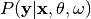

pyanno Package¶
abstract_model Module¶
Defines an abstract class that specifies the interface of pyAnno models.
- class pyanno.abstract_model.AbstractModel[source]¶
Bases: traits.has_traits.HasTraits
Abstract class defining the interface of a pyAnno model.
- are_annotations_compatible(annotations)[source]¶
Returns True if the annotations are compatible with the model.
- static create_initial_state(nclasses)[source]¶
Factory method returning a model with random initial parameters.
Parameters: nclasses (int) – Number of label classes
- generate_annotations(nitems)[source]¶
Generate a random annotation set from the model.
Sample a random set of annotations from the probability distribution defined the current model parameters.
Parameters: nitems (int) – Number of items to sample Returns: annotations (ndarray, shape = (n_items, n_annotators)) - annotations[i,j] is the annotation of annotator j for item i
- log_likelihood(annotations)[source]¶
Compute the log likelihood of a set of annotations given the model.
Returns log P(annotations | current model parameters).
Parameters: annotations (ndarray, shape = (n_items, n_annotators)) – annotations[i,j] is the annotation of annotator j for item i Returns: log_lhood (float) - log likelihood of annotations
- map(annotations)[source]¶
Computes maximum a posteriori (MAP) estimate of parameters.
Estimate the model parameters from a set of observed annotations using maximum a posteriori estimation.
Parameters: annotations (ndarray, shape = (n_items, n_annotators)) – annotations[i,j] is the annotation of annotator j for item i
- mle(annotations)[source]¶
Computes maximum likelihood estimate (MLE) of parameters.
Estimate the model parameters from a set of observed annotations using maximum likelihood estimation.
Parameters: annotations (ndarray, shape = (n_items, n_annotators)) – annotations[i,j] is the annotation of annotator j for item i
- sample_posterior_over_accuracy(annotations, nsamples, burn_in_samples=0, thin_samples=1)[source]¶
Return samples from posterior over the accuracy parameters.
Draw samples from P(accuracy parameters | data, model parameters). The accuracy parameters control the probability of an annotator reporting the correct label (the exact nature of these parameters varies from model to model).
Parameters: - annotations (ndarray, shape = (n_items, n_annotators)) – annotations[i,j] is the annotation of annotator j for item i
- nsamples (int) – Number of samples to return (i.e., burn-in and thinning samples are not included)
- burn_in_samples (int) – Discard the first burn_in_samples during the initial burn-in phase, where the Monte Carlo chain converges to the posterior
- thin_samples (int) – Only return one every thin_samples samples in order to reduce the auto-correlation in the sampling chain. This is called “thinning” in MCMC parlance.
Returns: samples (ndarray, shape = (n_samples, ??)) - Array of samples from the posterior distribution over parameters.
modelA Module¶
This module defines the class ModelA, an implementation of model A from Rzhetsky et al., 2009.
Reference¶
Rzhetsky A., Shatkay, H., and Wilbur, W.J. (2009). “How to get the most from your curation effort”, PLoS Computational Biology, 5(5).
- class pyanno.modelA.ModelA(nclasses, theta, omega, **traits)[source]¶
Bases: pyanno.abstract_model.AbstractModel
Implementation of Model A from (Rzhetsky et al., 2009).
The model defines a probability distribution over data annotations in which each item is annotated by three users. The distributions is described according to a three-steps generative model:
1. First, the model independently generates correctness values for the triplet of annotators (e.g., CCI where C=correct, I=incorrect)
2. Second, the model generates an agreement pattern compatible with the correctness values (e.g., CII is compatible with the agreement patterns ‘abb’ and ‘abc’, where different letters correspond to different annotations
3. Finally, the model generates actual observations compatible with the agreement patterns
The model has two main sets of parameters:
- theta[j] is the probability that annotator j is correct
- omega[k] is the probability of observing an annotation of class k over all items and annotators
At the moment the implementation of the model assumes 1) a total of 8 annotators, and 2) each item is annotated by exactly 3 annotators.
See the documentation for a more detailed description of the model.
Rzhetsky A., Shatkay, H., and Wilbur, W.J. (2009). “How to get the most from your curation effort”, PLoS Computational Biology, 5(5).
- are_annotations_compatible(annotations)[source]¶
Check if the annotations are compatible with the models’ parameters.
- static create_initial_state(nclasses, theta=None, omega=None)[source]¶
Factory method to create a new model.
It is often more convenient to use this factory method over the constructor, as one does not need to specify the initial model parameters.
If not specified, the parameters theta are drawn from a uniform distribution between 0.6 and 0.95 . The parameters omega are drawn from a Dirichlet distribution with parameters 2.0 :


Parameters: - nclasses (int) – number of possible annotation classes
- theta (ndarray, shape = (n_annotators, )) – theta[j] is the probability of annotator j being correct
- omega (ndarray, shape = (n_classes, )) – omega[k] is the probability of observing a label of class k
- generate_annotations(nitems)[source]¶
Generate random annotations from the model.
The method samples random annotations from the probability distribution defined by the model parameters:
- generate correct/incorrect labels for the three annotators, according to the parameters theta
- generate agreement patterns (which annotator agrees which whom) given the correctness information and the parameters alpha
- generate the annotations given the agreement patterns and the parameters omega
Note that, according to the model’s definition, only three annotators per item return an annotation. Non-observed annotations have the standard value of MISSING_VALUE.
Parameters: nitems (int) – number of annotations to draw from the model Returns: annotations (ndarray, shape = (n_items, n_annotators)) - annotations[i,j] is the annotation of annotator j for item i
- infer_labels(annotations)[source]¶
Infer posterior distribution over label classes.
Compute the posterior distribution over label classes given observed annotations, .
Parameters: annotations (ndarray, shape = (n_items, n_annotators)) – annotations[i,j] is the annotation of annotator j for item i Returns: posterior (ndarray, shape = (n_items, n_classes)) - posterior[i,k] is the posterior probability of class k given the annotation observed in item i.
- log_likelihood(annotations)[source]¶
Compute the log likelihood of a set of annotations given the model.
Returns log P(annotations | current model parameters).
Parameters: annotations (ndarray, shape = (n_items, n_annotators)) – annotations[i,j] is the annotation of annotator j for item i Returns: log_lhood (float) - log likelihood of annotations
- map(annotations, estimate_omega=True)[source]¶
Computes maximum a posteriori (MAP) estimate of parameters.
Estimate the parameters theta and omega from a set of observed annotations using maximum a posteriori estimation.
Parameters: - annotations (ndarray, shape = (n_items, n_annotators)) – annotations[i,j] is the annotation of annotator j for item i
- estimate_omega (bool) – If True, the parameters omega are estimated by the empirical class frequency. If False, omega is left unchanged.
- mle(annotations, estimate_omega=True)[source]¶
Computes maximum likelihood estimate (MLE) of parameters.
Estimate the parameters theta and omega from a set of observed annotations using maximum likelihood estimation.
Parameters: - annotations (ndarray, shape = (n_items, n_annotators)) – annotations[i,j] is the annotation of annotator j for item i
- estimate_omega (bool) – If True, the parameters omega are estimated by the empirical class frequency. If False, omega is left unchanged.
- sample_posterior_over_accuracy(annotations, nsamples, burn_in_samples=100, thin_samples=5, target_rejection_rate=0.3, rejection_rate_tolerance=0.2, step_optimization_nsamples=500, adjust_step_every=100)[source]¶
Return samples from posterior distribution over theta given data.
Samples are drawn using a variant of a Metropolis-Hasting Markov Chain Monte Carlo (MCMC) algorithm. Sampling proceeds in two phases:
- step size estimation phase: first, the step size in the MCMC algorithm is adjusted to achieve a given rejection rate.
- sampling phase: second, samples are collected using the step size from phase 1.
Parameters: - annotations (ndarray, shape = (n_items, n_annotators)) – annotations[i,j] is the annotation of annotator j for item i
- nsamples (int) – number of samples to draw from the posterior
- burn_in_samples (int) – Discard the first burn_in_samples during the initial burn-in phase, where the Monte Carlo chain converges to the posterior
- thin_samples (int) – Only return one every thin_samples samples in order to reduce the auto-correlation in the sampling chain. This is called “thinning” in MCMC parlance.
- target_rejection_rate (float) – target rejection rate for the step size estimation phase
- rejection_rate_tolerance (float) – the step size estimation phase is ended when the rejection rate for all parameters is within rejection_rate_tolerance from target_rejection_rate
- step_optimization_nsamples (int) – number of samples to draw in the step size estimation phase
- adjust_step_every (int) – number of samples after which the step size is adjusted during the step size estimation pahse
Returns: samples (ndarray, shape = (n_samples, n_annotators)) - samples[i,:] is one sample from the posterior distribution over the parameters theta
modelB Module¶
This module defines the class ModelB, a Bayesian generalization of the model proposed in (Dawid et al., 1979).
Reference¶
- Dawid, A. P. and A. M. Skene. 1979. Maximum likelihood
- estimation of observer error-rates using the EM algorithm. Applied Statistics, 28(1):20–28.
- class pyanno.modelB.ModelB(nclasses, nannotators, pi, theta, alpha=None, beta=None, **traits)[source]¶
Bases: pyanno.abstract_model.AbstractModel
Bayesian generalization of the model proposed in (Dawid et al., 1979).
Model B is a hierarchical generative model over annotations. The model assumes the existence of “true” underlying labels for each item, which are drawn from a categorical distribution,
 . Annotators report this labels with some noise, depending
on their accuracy,
. Annotators report this labels with some noise, depending
on their accuracy,  .
.The model parameters are:
- pi[k] is the probability of label k
- theta[j,k,k’] is the probability that annotator j reports label k’ for an item whose real label is k, i.e. P( annotator j chooses k’ | real label = k)
The parameters themselves are random variables with hyperparameters
- beta are the parameters of a Dirichlet distribution over pi
- alpha[k,:] are the parameters of Dirichlet distributions over theta[j,k,:]
See the documentation for a more detailed description of the model.
Dawid, A. P. and A. M. Skene. 1979. Maximum likelihood estimation of observer error-rates using the EM algorithm. Applied Statistics, 28(1):20–28.
Rzhetsky A., Shatkay, H., and Wilbur, W.J. (2009). “How to get the most from your curation effort”, PLoS Computational Biology, 5(5).
- static create_initial_state(nclasses, nannotators, alpha=None, beta=None)[source]¶
Factory method returning a model with random initial parameters.
It is often more convenient to use this factory method over the constructor, as one does not need to specify the initial model parameters.
The parameters theta and pi, controlling accuracy and prevalence, are drawn at random from the prior alpha and beta:
If not defined, the prior parameters alpha ad beta are defined as described below.
Parameters: - nclasses (int) – Number of label classes
- nannotators (int) – Number of annotators
- alpha (ndarray) – Parameters of Dirichlet prior over annotator choices Default value is a band matrix that peaks at the correct annotation, with a value of 16 and decays to 1 with diverging classes. This prior is ideal for ordinal annotations.
- beta (ndarray) – Parameters of Dirichlet prior over model categories Default value for beta[i] is 1.0 .
- generate_annotations(nitems)[source]¶
Generate a random annotation set from the model.
Sample a random set of annotations from the probability distribution defined the current model parameters:
- Label classes are generated from the prior distribution, pi
- Annotations are generated from the conditional distribution of annotations given classes, theta
Parameters: nitems (int) – Number of items to sample Returns: annotations (ndarray, shape = (n_items, n_annotators)) - annotations[i,j] is the annotation of annotator j for item i
- generate_annotations_from_labels(labels)[source]¶
Generate random annotations from the model, given labels
The method samples random annotations from the conditional probability distribution of annotations,
 given labels,
given labels,  :
:
Parameters: labels (ndarray, shape = (n_items,), dtype = int) – Set of “true” labels Returns: annotations (ndarray, shape = (n_items, n_annotators)) - annotations[i,j] is the annotation of annotator j for item i
- infer_labels(annotations)[source]¶
Infer posterior distribution over label classes.
Compute the posterior distribution over label classes given observed annotations, .
Parameters: annotations (ndarray, shape = (n_items, n_annotators)) – annotations[i,j] is the annotation of annotator j for item i Returns: posterior (ndarray, shape = (n_items, n_classes)) - posterior[i,k] is the posterior probability of class k given the annotation observed in item i.
- log_likelihood(annotations)[source]¶
Compute the log likelihood of a set of annotations given the model.
Returns log P(annotations | current model parameters).
Parameters: annotations (ndarray, shape = (n_items, n_annotators)) – annotations[i,j] is the annotation of annotator j for item i Returns: log_lhood (float) - log likelihood of annotations
- map(annotations, epsilon=1e-05, init_accuracy=0.6, max_epochs=1000)[source]¶
Computes maximum a posteriori (MAP) estimation of parameters.
Estimate the parameters theta and pi from a set of observed annotations using maximum a posteriori estimation.
Parameters: - annotations (ndarray, shape = (n_items, n_annotators)) – annotations[i,j] is the annotation of annotator j for item i
- epsilon (float) – The estimation is interrupted when the objective function has changed less than epsilon on average over the last 10 iterations
- initial_accuracy (float) – Initialize the accuracy parameters, theta to a set of distributions where theta[j,k,k’] = initial_accuracy if k==k’, and (1-initial_accuracy) / (n_classes - 1)
- max_epoch (int) – Interrupt the estimation after max_epoch iterations
- mle(annotations, epsilon=1e-05, init_accuracy=0.6, max_epochs=1000)[source]¶
Computes maximum likelihood estimate (MLE) of parameters.
Estimate the parameters theta and pi from a set of observed annotations using maximum likelihood estimation.
Parameters: - annotations (ndarray, shape = (n_items, n_annotators)) – annotations[i,j] is the annotation of annotator j for item i
- epsilon (float) – The estimation is interrupted when the objective function has changed less than epsilon on average over the last 10 iterations
- initial_accuracy (float) – Initialize the accuracy parameters, theta to a set of distributions where theta[j,k,k’] = initial_accuracy if k==k’, and (1-initial_accuracy) / (n_classes - 1)
- max_epoch (int) – Interrupt the estimation after max_epoch iterations
- sample_posterior_over_accuracy(annotations, nsamples, burn_in_samples=0, thin_samples=1)[source]¶
Return samples from posterior distribution over theta given data.
Samples are drawn using Gibbs sampling, i.e., alternating between sampling from the conditional distribution of theta given the annotations and the label classes, and sampling from the conditional distribution of the classes given theta and the annotations.
This results in a fast-mixing sampler, and so the parameters controlling burn-in and thinning can be set to a small number of samples.
Parameters: - annotations (ndarray, shape = (n_items, n_annotators)) – annotations[i,j] is the annotation of annotator j for item i
- nsamples (int) – number of samples to draw from the posterior
- burn_in_samples (int) – Discard the first burn_in_samples during the initial burn-in phase, where the Monte Carlo chain converges to the posterior
- thin_samples (int) – Only return one every thin_samples samples in order to reduce the auto-correlation in the sampling chain. This is called “thinning” in MCMC parlance.
Returns: samples (ndarray, shape = (n_samples, n_annotators, nclasses, nclasses)) - samples[i,...] is one sample from the posterior distribution over the parameters theta
modelBt Module¶
Definition of model B-with-theta.
- class pyanno.modelBt.ModelBt(nclasses, nannotators, gamma, theta, **traits)[source]¶
Bases: pyanno.abstract_model.AbstractModel
Implementation of Model B-with-theta from (Rzhetsky et al., 2009).
The model assumes the existence of “true” underlying labels for each item, which are drawn from a categorical distribution, gamma. Annotators report this labels with some noise. Crucially, the noise distribution is described by a small number of parameters (one per annotator), which their estimation efficient and less sensitive to local optima.
The model parameters are:
- gamma[k] is the probability of label k
- theta[j] parametrized the probability that annotator j reports label k’. More specifically, P( annotator j chooses k’ | real label = k) is theta[j] for k’ = k, or (1 - theta[j]) / sum(theta) if k’ != k .
See the documentation for a more detailed description of the model.
For a version of this model optimized for the loop design described in (Rzhetsky et al., 2009), see ModelBtLoopDesign.
Rzhetsky A., Shatkay, H., and Wilbur, W.J. (2009). “How to get the most from your curation effort”, PLoS Computational Biology, 5(5).
- static create_initial_state(nclasses, nannotators, gamma=None, theta=None)[source]¶
Factory method returning a model with random initial parameters.
<behaviour>
Parameters: - nclasses (int) – Number of label classes
- nannotators (int) – Number of annotators
- gamma (nparray) – An array of floats with size that holds the probability of each annotation value. Default is None
- theta (nparray) – An array of floats that the parameters of P( v_i | psi ) (one for each annotator)
Returns: model (ModelBt) - Instance of ModelBt
- generate_annotations(nitems)[source]¶
Generate a random annotation set from the model.
Sample a random set of annotations from the probability distribution defined the current model parameters.
Parameters: nitems (int) – Number of items to sample Returns: annotations (ndarray, shape = (n_items, n_annotators)) - annotations[i,j] is the annotation of annotator j for item i
- infer_labels(annotations)[source]¶
Infer posterior distribution over true labels.
Returns P( label | annotations, parameters), where parameters is the current point estimate of the parameters pi and theta.
- sample_posterior_over_accuracy(annotations, nsamples, burn_in_samples=100, thin_samples=5, target_rejection_rate=0.3, rejection_rate_tolerance=0.2, step_optimization_nsamples=500, adjust_step_every=100)[source]¶
Return samples from posterior distribution over theta given data.
Draw samples from P(theta | data, model parameters). The accuracy parameters, theta, control the probability of an annotator reporting the correct label (see ModelBt).
Parameters: - annotations (ndarray, shape = (n_items, n_annotators)) – annotations[i,j] is the annotation of annotator j for item i
- nsamples (int) – Number of samples to return (i.e., burn-in and thinning samples are not included)
- burn_in_samples (int) – Discard the first burn_in_samples during the initial burn-in phase, where the Monte Carlo chain converges to the posterior
- thin_samples (int) – Only return one every thin_samples samples in order to reduce the auto-correlation in the sampling chain. This is called “thinning” in MCMC parlance.
- target_rejection_rate (float) – target rejection rate for the step size estimation phase
- rejection_rate_tolerance (float) – the step size estimation phase is ended when the rejection rate for all parameters is within rejection_rate_tolerance from target_rejection_rate
- step_optimization_nsamples (int) – number of samples to draw in the step size estimation phase
- adjust_step_every (int) – number of samples after which the step size is adjusted during the step size estimation pahse
Returns: samples (ndarray, shape = (n_samples, n_annotators)) - samples[i,:] is one sample from the posterior distribution over the parameters theta
annotations Module¶
Defines objects to create and manipulate raw annotations.
- class pyanno.annotations.AnnotationsContainer[source]¶
Bases: traits.has_traits.HasStrictTraits
- DEFAULT_MISSING_VALUES_ALL = ['-1', 'NA', 'None', '*', -1, nan, None]¶
- DEFAULT_MISSING_VALUES_NUM = [-1, nan, None]¶
- DEFAULT_MISSING_VALUES_STR = ['-1', 'NA', 'None', '*']¶
- static from_array(x, missing_values=None, name='')[source]¶
Create an annotations object from an array or list-of-lists.
Input: x – array or list-of-lists containing numerical or string annotations missing_values – list of values that are considered missing values.
Default is [‘-1’, ‘NA’, ‘None’, ‘*’, -1, np.nan, None]name – name of the annotations (for user interaction)
- static from_file(filename, missing_values=None)[source]¶
Load annotations from a file.
The file is a text file with a columns separated by spaces and/or commas, and rows on different lines.
Input: filename – file name missing_values – list of labels that are considered missing values.
Default is [‘-1’, ‘NA’, ‘None’, ‘*’]
- pyanno.annotations.load_annotations(filename, missing_values=None)[source]¶
Load annotations from file.
The file is a text file with a columns separated by spaces and/or commas, and rows on different lines.
Input: filename – file name missing_values – list of labels that are considered missing values.
Default is [‘-1’, ‘NA’, ‘None’, ‘*’]
sampling Module¶
This module defines functions to sample from a distribution given its log likelihood.
- pyanno.sampling.optimize_step_size(likelihood, x0, arguments, x_lower, x_upper, n_samples, recomputing_cycle, target_rejection_rate, tolerance)[source]¶
Compute optimum jump for MCMC estimation of credible intervals.
Adjust jump size in Metropolis-Hasting MC to achieve target rejection rate. Jump size is estimated for each parameter separately.
Parameters: - likelihood (function(params, arguments)) – Function returning the unnormalized log likelihood of data given the parameters. The function accepts two arguments: params is the vector of parameters; arguments contains any additional argument that is needed to compute the log likelihood.
- x0 (ndarray, shape = (n_parameters, )) – Initial parameters value.
- arguments (any) – Additional argument passed to the function likelihood.
- x_lower (ndarray, shape = (n_parameters, )) – Lower bound for the parameters.
- x_upper (ndarray, shape = (n_parameters, )) – Upper bound for the parameters.
- n_samples (int) – Total number of samples to draw during the optimization.
- recomputing_cycle (int) – Number of samples over which the rejection rates are computed. After recomputing_cycle samples, the step size is adapted and the rejection rates are reset to 0.
- target_rejection_rate (float) – Target rejection rate. If the rejection rate over the latest cycle is closer than tolerance to this target, the optimization phase is concluded.
- tolerance (float) – Tolerated deviation from target_rejection_rate.
Returns: step (ndarray, shape = (n_parameters, )) - The final optimized step size.
- pyanno.sampling.sample_distribution(likelihood, x0, arguments, step, nsamples, x_lower, x_upper)[source]¶
General-purpose sampling routine for MCMC sampling.
Draw samples from a distribution given its unnormalized log likelihood using the Metropolis-Hasting Monte Carlo algorithm.
It is recommended to optimize the step size, step, using the function optimize_step_size() in order to reduce the autocorrelation between
successive samples.Parameters: - likelihood (function(params, arguments)) – Function returning the unnormalized log likelihood of data given the parameters. The function accepts two arguments: params is the vector of parameters; arguments contains any additional argument that is needed to compute the log likelihood.
- x0 (ndarray, shape = (n_parameters, )) – Initial parameters value.
- arguments (any) – Additional argument passed to the function likelihood.
- step (ndarray, shape = (n_parameters, )) – Width of the proposal distribution over the parameters.
- nsamples (int) – Number of samples to draw from the distribution.
- x_lower (ndarray, shape = (n_parameters, )) – Lower bound for the parameters.
- x_upper (ndarray, shape = (n_parameters, )) – Upper bound for the parameters.
- pyanno.sampling.sample_from_proposal_distribution(theta, step, lower, upper)[source]¶
Returns one sample from the proposal distribution.
Parameters: - theta (float) – current parameter value
- step (float) – width of the proposal distribution over theta
- lower (float) – lower bound for theta
- upper (float) – upper bound for theta
Returns: - theta_new (float) - new sample from the distribution over theta
- log_q_ratio (float) - log-ratio of probability of new value given old value to probability of old value given new value
database Module¶
- class pyanno.database.PyannoDatabase(filename)[source]¶
Bases: object
- remove(data_id, idx)[source]¶
Remove entry from database.
Parameters: - data_id (string) – Readable unique identifier for the annotations set
- idx (int) – Index in the list of entries with id data_id
- store_result(data_id, anno_container, model, value)[source]¶
Store a pyAnno result in the database.
The data_id must be a unique identifier for an annotations set.
Parameters: - data_id (string) – Readable unique identifier for the annotations set (e.g., the file name where the annotations are stored).
- anno_container (AnnotationsContainer) – An annotations container (see :class:`~AnnotationsContainer).
- model (object) – pyAnno model object instance
- value (float) – value of the objective function for the model-annotations pair, typically the log likelihood of the annotations given the model
util Module¶
- exception pyanno.util.PyannoValueError[source]¶
Bases: exceptions.ValueError
ValueError subclass raised by pyanno functions and methods.
- pyanno.util.compute_counts(annotations, nclasses)[source]¶
Transform annotation data in counts format.
At the moment, it is hard coded for 8 annotators, 3 annotators active at any time.
Input: annotations – Input data (integer array, nitems x 8) nclasses – number of annotation values (# classes)
Ouput: data – data[i,j] is the number of times the combination of annotators
number j voted according to pattern i (integer array, nclasses^3 x 8)
- pyanno.util.dirichlet_llhood(theta, alpha)[source]¶
Compute the log likelihood of theta under Dirichlet(alpha).
- pyanno.util.is_valid(annotations)[source]¶
Return True if annotation is valid.
An annotation is valid if it is not equal to the missing value, MISSING_VALUE.
- pyanno.util.labels_count(annotations, nclasses, missing_val=-1)[source]¶
Compute the total count of labels in observed annotations.
- pyanno.util.labels_frequency(annotations, nclasses, missing_val=-1)[source]¶
Compute the total frequency of labels in observed annotations.
- pyanno.util.majority_vote(annotations)[source]¶
Compute an estimate of the real class by majority vote.
In case of ties, return the class with smallest number.
Parameters: annotations (ndarray, shape = (n_items, n_annotators)) – annotations[i,j] is the annotation made by annotator j on item i - vote : ndarray, shape = (n_items, )
- vote[i] is the majority vote estimate for item i
- pyanno.util.normalize(x, dtype=<type 'float'>)[source]¶
Returns a normalized distribution (sums to 1.0).